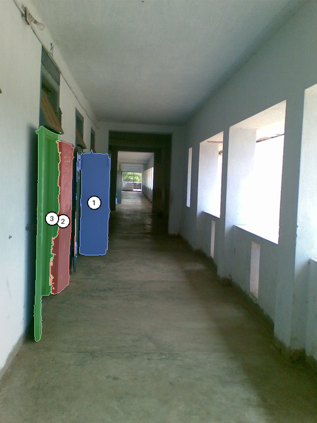
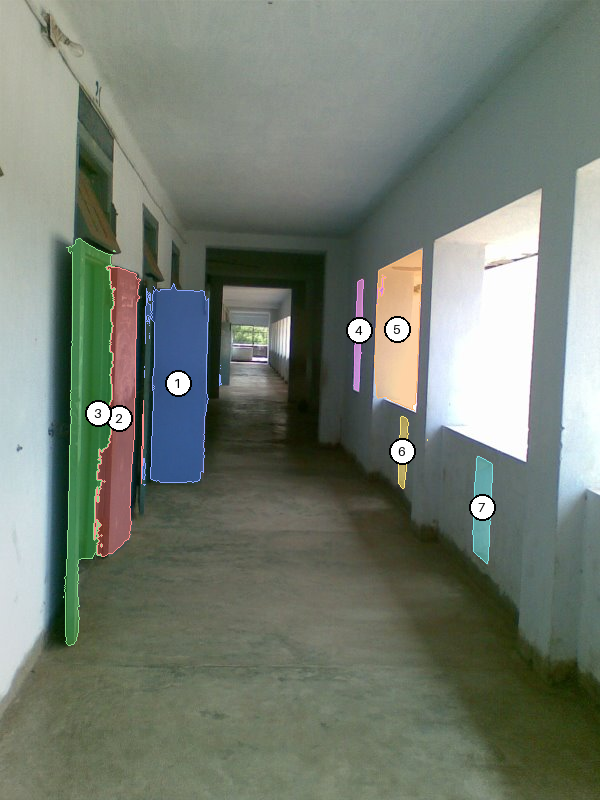
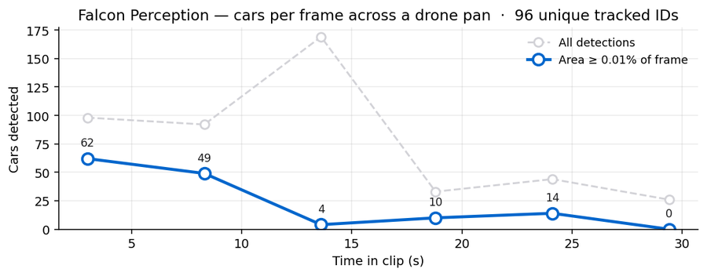
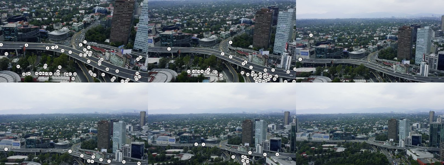
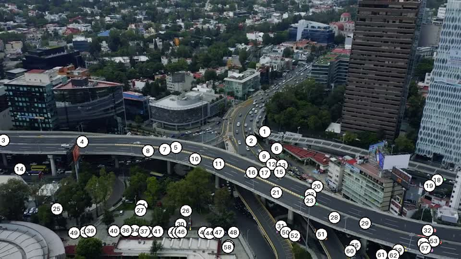
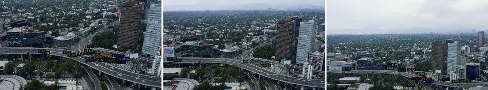

Code
from PIL import Image
from IPython.display import display
img = Image.open('mlx_vlm_pr926/outputs/input.jpg')
display(img)This is a follow-on to the methodology post on grounded reasoning. The story there: a plain VLM will count, compare, and localise confidently, often wrongly. The fix is to let a segmentation model (here, Falcon Perception) turn pixels into geometry and let the VLM reason over the numbers.
mlx-vlm PR #926 packages exactly that into a six-file drop-in folder, with Gemma 4 as the orchestrator. Inspired by that PR, this post runs two examples end-to-end on an M2 Max:
3 vs 3. Grounded agent says 3 vs 4.A photo. Distinct doors down the left wall, window openings down the right. The correct answer is asymmetric, but the visual balance is symmetric, which is exactly the kind of prompt a VLM gets wrong.
from PIL import Image
from IPython.display import display
img = Image.open('mlx_vlm_pr926/outputs/input.jpg')
display(img)Query: How many doors are visible on the left wall of this corridor versus how many window openings are on the right wall? Give exact counts.
# One-time install
# !uv pip install -U mlx-vlm
# Drop in the PR's self-contained folder
# !git clone --depth=1 https://github.com/Blaizzy/mlx-vlm.git
# !cp -r mlx-vlm/agents/grounded_reasoning ./mlx_vlm_pr926import sys; sys.path.insert(0, 'mlx_vlm_pr926')
from mlx_vlm import load
from agent import LocalVLMClient, run_agent, run_baseline
# Perception backbone (~2 GB). Reused across every call below.
fp_model, fp_processor = load('tiiuae/Falcon-Perception')
# Orchestrator VLM — PR recommends gemma-4-26b-a4b-it-4bit.
# I used the dense 31B 4-bit already in my HF cache.
vlm = LocalVLMClient('mlx-community/gemma-4-31b-it-4bit', max_tokens=2048)Loading orchestrator VLM: mlx-community/gemma-4-31b-it-4bit ...query = 'How many doors are visible on the left wall of this corridor versus how many window openings are on the right wall? Give exact counts.'
print(run_baseline(img, query, vlm))There are 3 doors visible on the left wall and 3 window openings on the right wall.3 vs 3. Confident. Symmetric. Also wrong — the right wall has four window openings. Crucially, no evidence surface: no mask IDs, no geometry, nothing to open if you doubt the claim.
result = run_agent(img, query, fp_model, fp_processor, vlm, verbose=True)
print(result.answer)────────────────────────────────────────────────────────────
Grounded Reasoning Agent
Query: 'How many doors are visible on the left wall of this corridor versus how many window openings are on the right wall? Give exact counts.'
────────────────────────────────────────────────────────────
[Step 1] [think] Plan: ground "door" left, "window opening" right, compare counts.
[tool] ground_expression("door", slot="doors") → 3 masks
[Step 2] [think] Doors grounded. Now the windows.
[tool] ground_expression("window opening", slot="windows") → 4 masks
[Step 3] [think] slot 'doors': {1,2,3}. slot 'windows': {4,5,6,7}.
[tool] answer(supporting_mask_ids=[1..7])
────────────────────────────────────────────────────────────
Answer: There are 3 doors visible on the left wall and 4 window openings on the right wall of the corridor.
FP calls: 2 VLM calls: 3
────────────────────────────────────────────────────────────
There are 3 doors visible on the left wall and 4 window openings on the right wall of the corridor.The agent finished in 3 VLM calls and 2 Falcon Perception calls — wall clock 152 s on an M2 Max.
The two Set-of-Marks images below are what the VLM actually saw between tool calls. The final image is what you would hand back to a user as the receipt.
result.trace[0].som_image # step 1 — 3 doors
result.trace[1].som_image # step 2 — doors + 4 windows
result.final_image
The PR’s demo notebook stops at single images. But the same plumbing — run_ground_expression per frame, centroid metadata, Set-of-Marks overlays — generalises directly to video. No agent loop required for this one: we loop in Python, call Falcon per frame, and track identities with a tiny centroid matcher.
The clip is a 44-second aerial drone pan over a highway overpass in Mexico City (Mixkit, free license). Six evenly-spaced frames.
# Extract 6 frames from the clip with ffmpeg
import subprocess, os
os.makedirs('mlx_vlm_pr926/video/frames', exist_ok=True)
for i in range(6):
t = round(i * 44.0 / 5 * 0.6 + 3, 1) # spread across first ~30 s
subprocess.run([
'ffmpeg', '-y', '-ss', str(t),
'-i', 'mlx_vlm_pr926/video/traffic.mp4',
'-vframes', '1', '-vf', 'scale=960:-1',
f'mlx_vlm_pr926/video/frames/frame_{i:02d}.jpg',
'-loglevel', 'error',
])
Image.open('mlx_vlm_pr926/video/frames/frame_00.jpg')Call Falcon Perception on each frame with the expression "car". Falcon returns masks + centroid + area for every match; we filter anything smaller than 0.015% of the frame (aerial cars are tiny, but sub-that-threshold blobs are overwhelmingly noise).
from pathlib import Path
from fp_tools import run_ground_expression
from viz import render_som
AREA_MIN = 0.00015 # 0.015% of frame — trims tiny false positives
frame_files = sorted(Path('mlx_vlm_pr926/video/frames').glob('frame_*.jpg'))
per_frame = []
for i, fp_path in enumerate(frame_files):
frame = Image.open(fp_path).convert('RGB')
masks = run_ground_expression(fp_model, fp_processor, frame,
'car', max_new_tokens=512)
# Filter tiny detections, renumber 1..N so labels stay readable
filt = {k: v for k, v in masks.items() if v['area_fraction'] >= AREA_MIN}
filt = {i+1: v for i, (_, v) in enumerate(filt.items())}
for nid, m in filt.items(): m['id'] = nid
render_som(frame, filt).save(f'mlx_vlm_pr926/video/overlays/overlay_{i:02d}.jpg')
per_frame.append({'frame': i, 'n_raw': len(masks),
'n_filtered': len(filt), 'masks': filt})
print(f' frame {i}: raw={len(masks)} filtered={len(filt)}')[load] Falcon Perception ...
frame 0: raw=98 filtered=62
frame 1: raw=92 filtered=49
frame 2: raw=169 filtered=4
frame 3: raw=33 filtered=10
frame 4: raw=44 filtered=14
frame 5: raw=26 filtered=0Between consecutive frames, match each detection to the closest one in the previous frame within a radius of 0.18 (normalised coordinates). Carry the track ID. Unmatched detections start new IDs. This is the rock-bottom tracker — no Kalman, no re-identification — but it is enough to demonstrate that the PR’s per-frame output is the right shape for a tracking pipeline.
def centroid_track(per_frame, max_dist=0.18):
next_id = 1
for f_idx, f in enumerate(per_frame):
f['tracks'] = {}
if f_idx == 0:
for m in f['masks'].values():
f['tracks'][m['id']] = next_id; next_id += 1
else:
prev = per_frame[f_idx - 1]
used = set()
for m in f['masks'].values():
cx, cy = m['centroid_norm']['x'], m['centroid_norm']['y']
best, bd = None, max_dist
for pm in prev['masks'].values():
if pm['id'] in used: continue
p = pm['centroid_norm']
d = ((p['x']-cx)**2 + (p['y']-cy)**2) ** 0.5
if d < bd: bd, best = d, pm
if best is not None:
used.add(best['id'])
f['tracks'][m['id']] = prev['tracks'][best['id']]
else:
f['tracks'][m['id']] = next_id; next_id += 1
return next_id - 1
total = centroid_track(per_frame)
print(f'unique tracks across {len(per_frame)} frames: {total}')unique tracks across 6 frames: 96# Plot raw vs filtered counts over time (code elided in the post)
from IPython.display import Image as NBImage
NBImage('mlx_vlm_pr926/video/count_series.png')
Two things to read off the chart:
Each detection is a coloured mask with a numbered white pill at the centroid. Stitched 3×2 here to show the drone’s trajectory across the highway.
NBImage('mlx_vlm_pr926/video/grid.jpg')
62 cars numbered 1–62. Notice that labels follow the highway curves and the parking strips below — Falcon is doing honest per-object segmentation, not painting a heatmap.
Image.open('mlx_vlm_pr926/video/overlays/overlay_00.jpg')
Same idea, denser frame sampling — 24 frames at ~1.2 fps from the first 21 seconds of the clip — and this time the overlay colour is keyed to the track ID, not the per-frame mask number. So if the tracker successfully re-identifies a car across frames, its colour stays the same. If it fails, each frame’s car gets a fresh ID and a fresh colour.
import subprocess
from pathlib import Path
from fp_tools import run_ground_expression
FRAMES = Path('mlx_vlm_pr926/video/track_frames'); FRAMES.mkdir(exist_ok=True)
for i in range(24):
t = round(i * 0.85 + 1.0, 2)
subprocess.run(['ffmpeg', '-y', '-ss', str(t),
'-i', 'mlx_vlm_pr926/video/traffic.mp4',
'-vframes', '1', '-vf', 'scale=720:-1',
f'{FRAMES}/f_{i:03d}.jpg', '-loglevel', 'error'])
# Detect, track, render coloured-by-id overlays, encode to mp4
# (full helper in the post's source — see build_tracked_video.py)
...Three frames sampled across the clip — same #173-style track ID format, but observe how rarely a number persists from one panel to the next. The drone is panning fast enough that almost every car earns a new ID.
from IPython.display import Image as NBImage
NBImage('mlx_vlm_pr926/video/track_strip.jpg')
And the stitched MP4 — 24 frames at 5 fps so it plays back in about 5 seconds.
from IPython.display import HTML
HTML('''<video controls loop muted playsinline width="720" src="mlx_vlm_pr926/video/tracked.mp4"></video>''')24 frames → 773 unique track IDs. That ratio (≈32 IDs per frame, with a fresh ID for almost every car) is the rock-bottom tracker giving up on identity. Two reasons:
A real tracker would need: tighter frame sampling (5–10 fps instead of 1.2 fps), a Kalman filter conditioned on the drone’s pan vector, and an appearance-based re-id step. The point of this version is that the per-frame detection primitive Falcon Perception gives you is the right input to all of those — the rest is conventional tracking-by-detection plumbing.
I am deliberately using the rock-bottom tracker to highlight where the boundary is:
Falcon Perception gives you the detection primitive — a per-frame list of segmented instances with geometry. A real tracker wraps that with Kalman prediction + Hungarian assignment + a small re-id model. The point of this example is that the PR’s plumbing is already correctly shaped for that next layer.
Six new files, self-contained under agents/grounded_reasoning/:
| File | Purpose |
|---|---|
agent.py |
Agent loop, LocalVLMClient, run_agent, run_baseline |
fp_tools.py |
Falcon Perception wrapper (used directly in Example 2) |
mask_ops.py |
Deterministic spatial ops (rank_by_x, closest_pair, …) |
viz.py |
Set-of-Marks rendering + final overlay |
demo.ipynb |
Five still-image examples |
README.md |
Usage + sizing |
| Model | RAM | Fits on |
|---|---|---|
tiiuae/Falcon-Perception |
~2 GB | Always — perception backbone |
mlx-community/gemma-4-26b-a4b-it-4bit |
~14 GB | M3 Pro / Max (recommended) |
google/gemma-4-e4b-it |
~16 GB | M3 Pro / Max |
google/gemma-4-e2b-it |
~5 GB | M3 base (8 GB) |
I ran the dense 31B 4-bit on an M2 Max (64 GB). End-to-end: ~150 s for the corridor agent, ~55 s for six frames of Falcon-only detection.